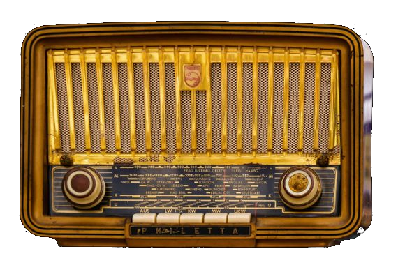

Conseguir la producción de un mensaje altamente expresivo y convincente pasa por utilizar los siguientes elementos de la manera más inteligente posible.
- Voz: Es esencial para transmitir el mensaje. Aspectos como el tono, el timbre, la entonación o la intensidad nos permitirán alcanzar el objetivo pretendido del mensaje.
- Música: Su función principal es despertar sensaciones en el oyente. Una música adecuada va a ayudarnos a captar al oyente y a anclarlo al mensaje que le queremos contar.
- Efectos sonoros: Imprescindibles para contextualizar el mensaje. Al igual que la música nos ayuda a situar a los personajes en la escena.
- Silencio: Es tan importante o más que la voz. Los silencios pueden imprimir matices muy interesantes en el mensaje transmitido.
